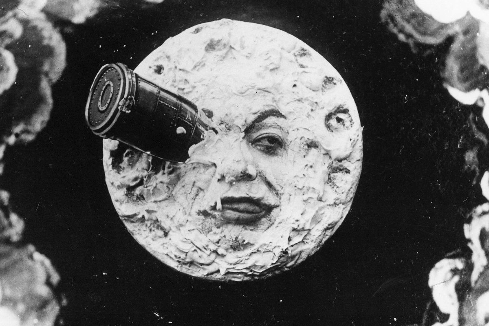

Les frères Lumière ont montré leur cinématographe en public pour la première fois le 28 décembre 1895 au Grand Café à Paris. Ils ont montré dix petits films, chacun durant environ 50 secondes. Parmi ces films, il y avait La Sortie de l'usine Lumière à Lyon et L'Arrivée d'un train en gare de La Ciotat. Ce film a eu du succès et a attiré des gens qui n’avaient jamais vu d’images en mouvement. Cet événement est souvent vu comme le début du cinéma, car il a montré que les films pouvaient amuser les gens. Après cela, les frères Lumière ont continué à faire des films et à les montrer dans différentes villes en Europe. Ils ont aidé à faire connaître le cinéma et à inspirer d'autres réalisateurs. Leur travail était très important pour le développement du cinéma.
